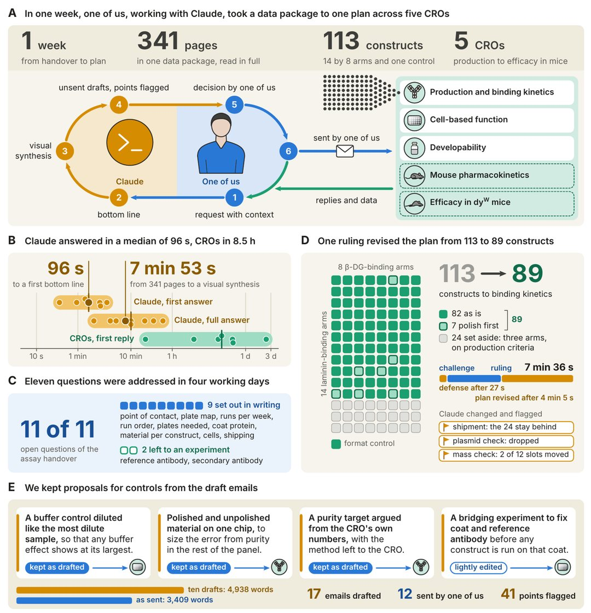
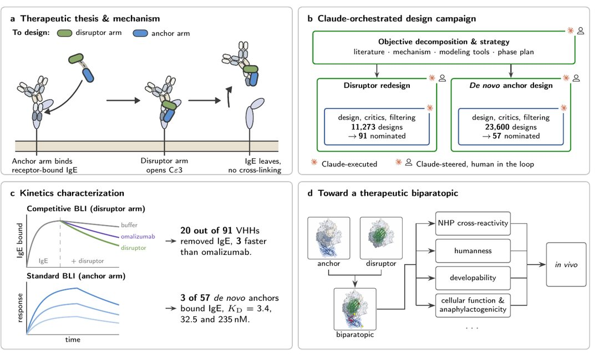

新药研发成本高且周期漫长。一款药物从早期想法到获批上市，按行业常见估算，通常要十年以上、花费数十亿美元，还要许多团队反复试错。
10 月 27 日（美国时间），AI 公司 Anthropic 公布了一批用 Claude 做新药研发的早期成果，还宣布收购了初创药企 Mithril Medicine。令人意外的是，这家公司只有一名全职员工。
一个人，带着几位兼职顾问，把合同、物流和实验协调大量交给 Claude，同时对接 11 家外部实验室，在不到 18 个月内把一种罕见肌营养不良候选方案推进到了小鼠实验阶段。

一人药企与AI助手：现实中如何运作？
Mithril 位于美国马萨诸塞州剑桥，由 Cody Tranbarger 创立，早期由 Atlas Venture 孵化。公司全职员工仅他一人，另有 8 位付费顾问。

我觉得一个聪明、执行力强的创始人加上 AI，能做出超出团队规模的事。“一人公司”也开始变成能拿来检验的现实样本了。
不过我还是觉得要等等看。官方并未公开收购金额，而且背后还有 8 位付费顾问和 11 家外部实验室，“一人”并不算单打独斗。另据 R&D World 报道，收购实际发生在 7 月（待确认）。
我也发现有些报道喜欢把“3 个月的文书 4 小时写完”“一个月 3.5 万个设计”“审阅时间减少 89%”凑在一起，然后得出“大药厂要完蛋了”这种吓人的结论。
我看这些数字都有明确前提：只针对某份具体文件、全程有人盯着复核，或者还停在体外实验。简单凑到一起，容易让人以为新药马上做出来了。
落到实际工作里，Claude 更像一个不知疲倦的“项目助理”：读材料、出方案、起草邮件，最后由人拍板。
现代生物医药产业分工明确，实验和合成常外包给外部合同研究组织（CRO）。协调外包需要审核大量数据、跟进合同并处理日常邮件。

技术报告显示，在典型的一周里，Claude 读完了一份 341 页的生产数据包，7 分 53 秒给出了 113 个抗体构建的可视化汇总，每个都附上建议的下一步。这一周它还起草了 17 封邮件（人工编辑后发出 12 封），并列出 41 个“没有书面依据、需要人确认”的细节。
当时外包实验室的首次回复中位数是 8.5 小时，Claude 给出第一版答复的中位数是 96 秒。报告据此认为，筛选规模不一定要受指挥团队人数的限制。
新药卡在哪里？瓶颈其实分散在全流程
Anthropic 在官方博客中提到，新药研发的阻碍分布在不同环节，包括靶点评估、分子设计、生产文件和临床规划等。

团队与百时美施贵宝（BMS）、Generate Biomedicines、BigHat 等六家机构展开合作，测试 AI 在不同环节的实际表现。
在细胞疗法方面，Generate 的 6 位科学家用 Claude Code 重新设计 CAR-T 细胞里的一个部件。最好的设计比标准部件短约 70%，在实验室测试中，细胞表面的受体数量约为原来的 10 倍，杀伤肿瘤细胞也更高效。
在分子优化方面，BigHat 让 Claude 接入实验数据系统，约 10 周测试了约 1,010 个变体。Claude 和研究员重新分析原始数据，怀疑常用指标有误导，提出了新指标。最好的版本结合力强 10 倍以上，一个癌症先导分子在高 18°C 的温度下仍能保持溶解。
在文件处理方面，Enveda 的实验显示，AI 审核 1,061 页生产监管文件时找出了人工发现的全部 11 个问题，并额外标出 7 个漏网问题，审阅耗时减少了 89%。
用日常例子看懂：桥接抗体与分子设计
这次进展中受到较多关注的，是针对罕见病和食物过敏的分子设计。我们可以结合具体场景来理解这些分子的作用机制。

在食物过敏中，过敏原通常经由体内的 IgE 抗体触发过敏反应。Divergence Labs 让 Claude 把目标拆成设计计划，约一个月内基本自主地生成了约 3.5 万个抗体设计（11,273 个“破坏臂”加 23,600 个“锚定臂”）。
可以把它想象成拆掉一颗粘在门上的“过敏开关”：一只手（锚定臂）先牢牢抓住 IgE，另一只手（破坏臂）把它从细胞受体上撬下来。
在罕见病方面，Mithril 研发的是针对 LAMA2 相关先天性肌营养不良的方案。患儿缺乏连接肌细胞膜与外部基底膜的蛋白质结构。
患病肌肉会产生一种替补蛋白，但它无法固定在细胞膜上。研究团队设计了一种“双特异性桥接抗体”，相当于一个两头都能插的转接头。
转接头一头抓住替补蛋白（laminin-α4），另一头扣在细胞膜上的 β-dystroglycan，试图把松脱的肌肉“支架”重新固定住。
小鼠实验与3.5万个设计：必须看清的边界
审视这类技术进展时，需要结合技术报告中给出的具体限制来理解。
小鼠实验出现阳性结果并不代表药物研发成功。Mithril 公布的 38 页技术报告注明：未经同行评审（Not peer reviewed）。

实验用的是先天缺 laminin-α2 的 dyW 小鼠。2+2 构型抗体组的峰值前肢力量约为溶剂对照组的 1.95 倍，握力也高约 1.94 倍；另一种 1+1 构型则没测到效果。报告也坦承：每组只有 4–7 只小鼠，分组按顺序入组、没有随机化；按单只小鼠算 P 值很小，按“窝”算则是 0.057。报告自己认为还需要同期、盲法的重复实验。
Anthropic 官方表示，目前相关项目大多处于临床前阶段。如果候选药物继续站得住，Anthropic 预计最早 2028 年底才能开始人体临床试验；这是有条件的预期。
另外，3.5 万个分子设计指计算机生成的候选序列，不等于实际药物。在药物筛选过程中，前期往往包含大量初选草稿。
我看到这个数字时，第一反应是想问：3.5 万只是最好算出来的一笔账，最后有多少能通过表达、稳定性和免疫原性测试？多数抗体设计还没进动物实验就先被筛掉了。
从预印本看，体外实验里 91 个提名的破坏臂有 20 个能把 IgE 拆下（3 个比现有药物奥马珠单抗更快），57 个锚定臂有 3 个能结合 IgE；两只“手”还没组装成完整分子。
AI 工具在实际使用中也会出错。报告记录了 6 处错误，其中至少 3 处在人工编辑后仍随邮件发到了外包实验室。一处（每管材料量写少了）在灌装前一天内被纠正；据 R&D World 报道，另有两处审阅错误过了 4 天多才被发现。
如何辨别AI医疗新闻中的夸大宣传？
面对涉及 AI 制药的新闻，可以通过几个维度来核对信息：
第一，核对研发阶段。从算法生成、体外生化实验、动物实验到人体三期临床，淘汰率较高。仅凭体外实验数据宣称治疗效果的表述并不准确。
第二，区分设计数量与实际成药。计算机短期内能生成大量候选序列，这属于前期筛选，后续仍需通过实体实验验证理化性质与安全性。
第三，注意个人工作流的支撑条件。一人药企的运作依赖成熟的外部合同实验室网络，以及顾问团队在关键节点提供的专业判断和审核纠错。
读这类消息时，我会把前提和数据拆开看。AI 确实能省下不少写材料和初筛的时间，但某个环节快了，不等于药就做成了。
AI 可以协助整理文献、编排跨机构协作流程并提高初筛速度，药物的实际有效性依然需要经过后续实验验证。
对于“一个人+AI 协作搞研发”这种工作方式，你觉得它会成为未来研发的常见形态吗？你如何看待 AI 在新药研发中的实际作用？欢迎在评论区分享你的看法。
参考来源 - Anthropic 官方发布：https://x.com/AnthropicAI/status/2115178675050307942 - Anthropic 官方博客：https://www.anthropic.com/research/early-progress-drug-development - Mithril 技术报告（未同行评审）：https://www-cdn.anthropic.com/52e1f5d50c47ca3818f56704c27cf19e59b62e77.pdf - Divergence 预印本论文：https://divergencelabs.com/publications/ige-preprint.pdf - Generate 合作研究：https://generatebiomedicines.com/publications/refactored-intracellular-domains-enhance-car-expression-and-function/ - BigHat 合作报告：https://www.bighatbio.com/bighat-anthropic-collaboration-report-10-27-2026 - Enveda 合作成果：https://enveda.com/CMC-Document-Processor/ - Cody Tranbarger 说明：https://x.com/Prof_Oak_/status/2115185849424048564 - Nathan C. Frey 讨论：https://x.com/nc_frey/status/2115187081219846566 - R&D World 报道：https://www.rdworldonline.com/anthropic-acquires-mithril-medicine-one-person-biotech/ - The Next Web 报道：https://thenextweb.com/news/anthropic-mithril-acquisition-claude-drug-development - Quartz 报道：https://qz.com/anthropic-mithril-medicine-acquisition-drug-programs-102826